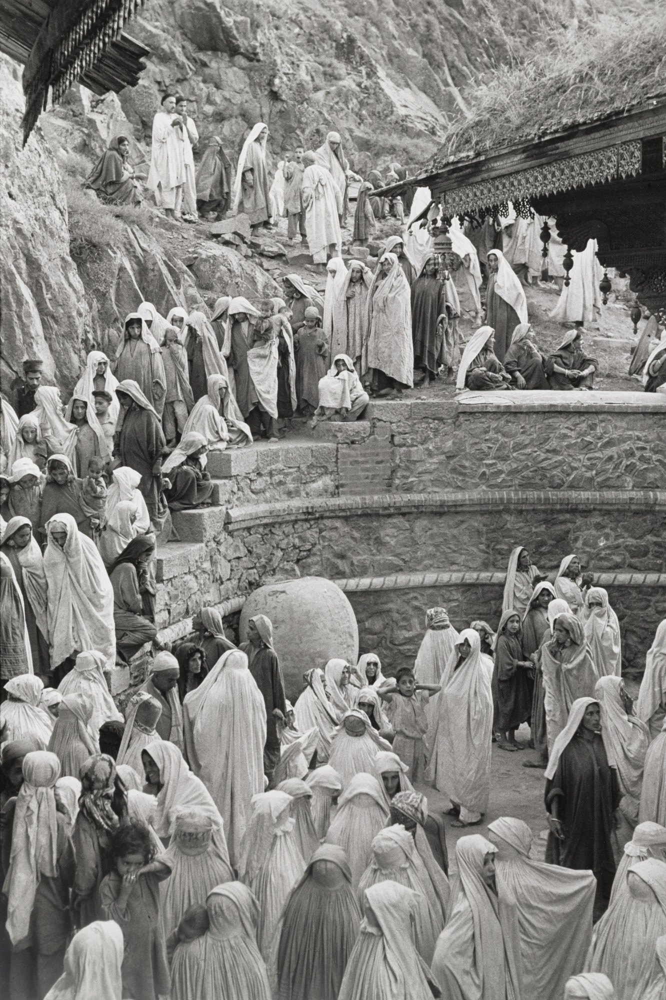

Henri Cartier-Bresson 1908 – 2004 · "the eye of the century" · the decisive moment



Life in ten lines
The six rules (techniques)
- One Leica, one 50 mm lens: the eye's own angle of view; chrome covered with black tape.
- No flash: "like coming to a concert with a pistol in your hand". Available light only.
- No cropping: the black film border proves the full frame. Compose in the camera.
- No darkroom: a lab printed his work; the picture ends when the shutter closes.
- Black & white: light, line, shape, texture, tonal contrast.
- Geometry first: find the structure, then wait for life to enter it.
Three Cartier-Bressons (Chéroux, 2014)
1926–35 the Surrealist · 1936–46 the engaged witness · 1947–70s the Magnum eye, then the contemplative.
Vocabulary to listen for
Decisive moment: meaning + geometry in the same instant.
Framing: what the edges include; a "frame within a frame".
Shutter speed: fast = frozen motion (the jump); slow = blur (the cyclist).
Depth of field: how much is sharp, front to back.
Exposure: how light or dark; available light only.
Balance / symmetry: visual weight; a reflection doubles it.
Line & rhythm: ladders, rails, hoops; repeated shapes.
Form / shape / silhouette: the jumping man as a black cut-out.
Texture: plaster, rubble, feathers, wool.
Tonal contrast: deep blacks against bright whites.
Proportion: small figures in big space.
Golden section: the painter's ratio he learned from Lhote.
Artist statement · The Decisive Moment, 1952
"To me, photography is the simultaneous recognition, in a fraction of a second, of the significance of an event as well as of a precise organization of forms which give that event its proper expression."
Epigraph (Cardinal de Retz, 1717): "There is nothing in this world that does not have a decisive moment."